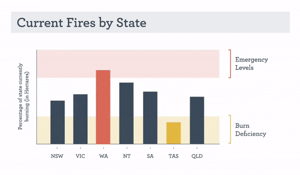
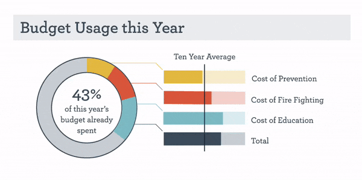
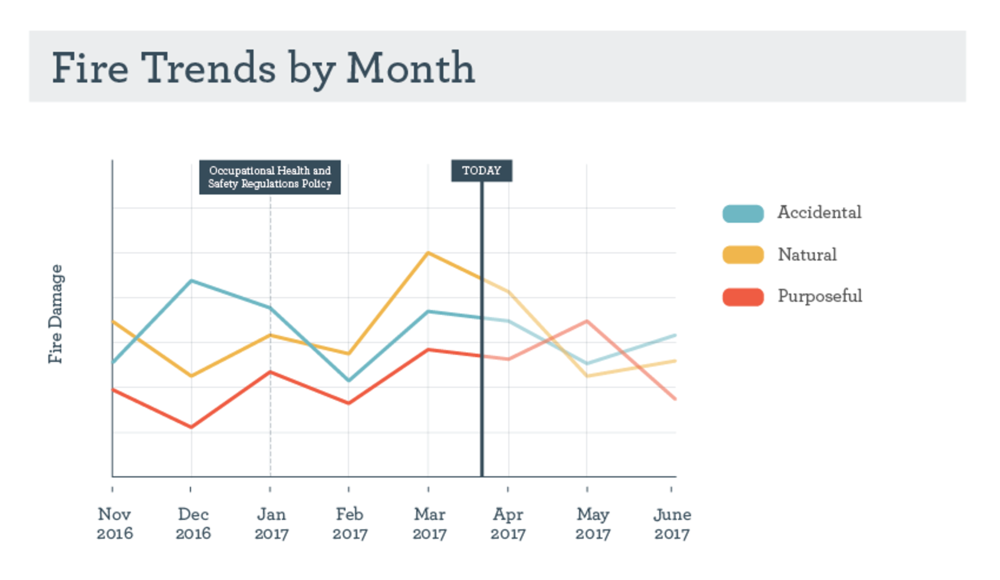
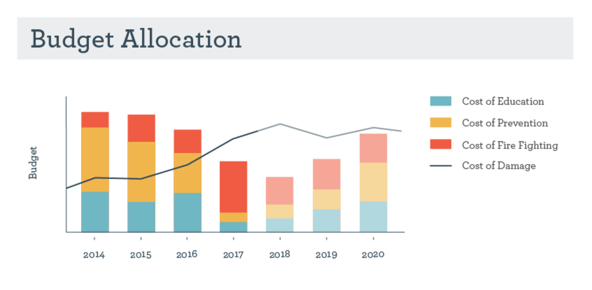

This is a design for a real time dashboard displaying information about fires in Australia. Note: this data visualization is purely hypothetical and does not rely on real data.
| Year: | 2017 |
| Client: | CMU MHCI |
| Role: | Animator and lead visual designer |
| Duration: | 3 weeks |
Our team was tasked with creating a Climate Change + Biodiversity Dashboard for Australia. Our ‘client’ for this project was an advisory board of climate change and biodiversity scientists who want to see the fruits of their research and monitoring efforts acted upon. The users of the dashboard would be national-level policy makers. Secondary and tertiary audiences include NGOs, non-profits, and the public.
From our research, we scoped down to showing the following in our dashboard:
By showing the above, we believe that:
Kathryn is a key Environmental Policymaker in Australia. There was quite a bit of damage caused by fires last year, and the Prime Minister is wondering how to prevent that in the future. Kathryn wants to figure out if they need more money in the budget or if they simply need to reassess their spending patterns and reallocate some funds.
This visualization shows the percentage of burning in each state in Australia. When a bar turns red, it has entered the emergency levels of burning, when it turns yellow, it has entered the burn deficiency levels of burning. To show what has changed recently, we added a crosshatch animation to show any movement in the last 24 hours and the direction of that movement.

This visualization displays the percentage of the fire budget used and breakdown of how it was used. Similar to the animation above, this visualization animates with crosshatching to show recent movement.

This visualization shows the fire trends over the past few months and the predictions for the future based on past data.

This visualization shows the budget allocation breakdown over the past few years in relation to the total cost of damage with future predictions.

Shunta McDavid, RhoEun Song, Imogen Todd